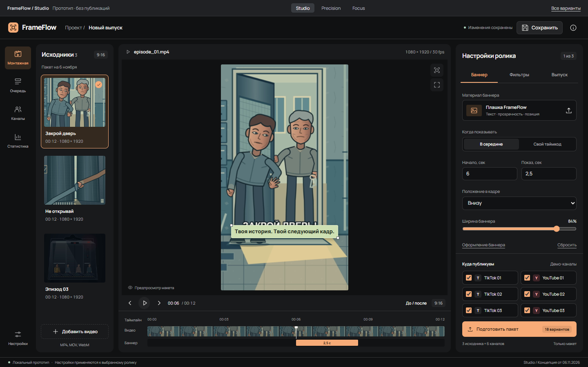
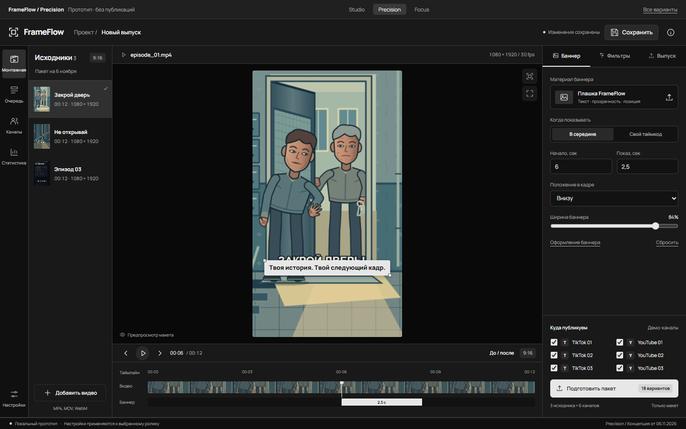
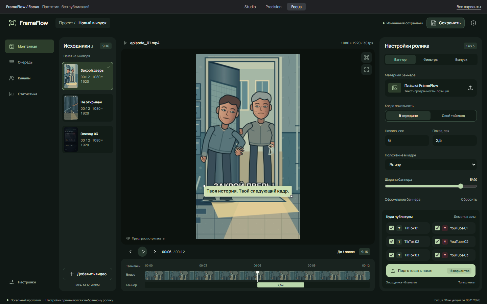

Studio
Творческая студияТёплый графит, крупные кадры исходников и отдельные рабочие поверхности. Видео остаётся в центре внимания.
- Визуальная библиотека материалов
- Знакомая структура монтажной
- Тёплый акцент на главном действии
Тот же рабочий процесс. Три разных характера.
Откройте каждый вариант: выберите
исходник, настройте баннер и пройдите запуск демопакета.

Тёплый графит, крупные кадры исходников и отдельные рабочие поверхности. Видео остаётся в центре внимания.

Нейтральный графит, светлые акценты и чёткая сетка. Выбранное направление с более читаемыми подписями и спокойными элементами управления.

Глубокие зелёные поверхности, мягкие формы и подписанная навигация. Меньше разделителей, спокойнее работа.